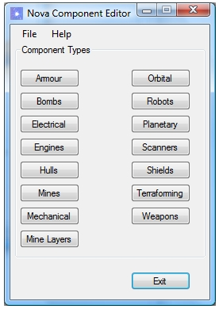
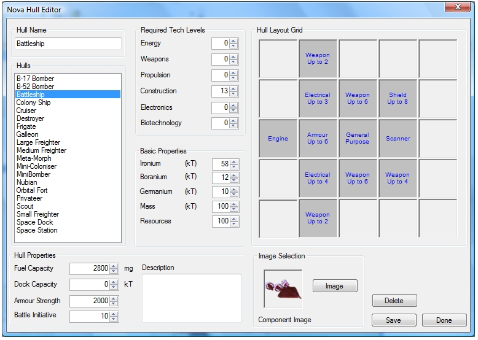
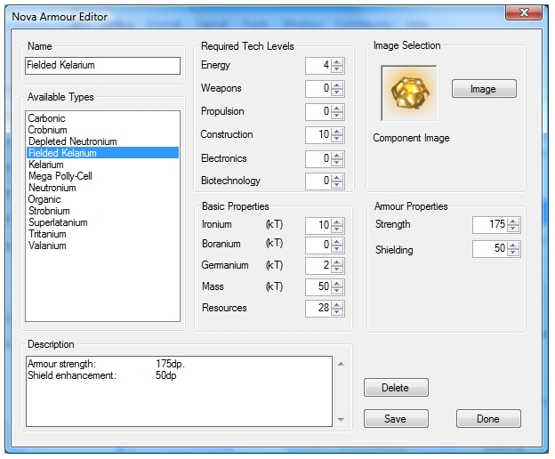
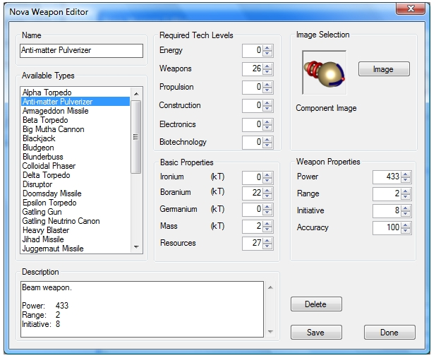

Defining all the components (scanners, engines, etc.) was turning out to be a bit tedious so, as a development tool, a component designer has been implemented to create the components that are used in the game. It is really just a simple Windows application that provides a convenient way of populating and updating the simple data structures that define the various game components. This is the main screen that provides the "jumping off" point to the individual dialogs for each component type that can be created:

Probably the most complicated component is the ship (or starbase) hull and here is a screen shot of a hull (Battleship) being created. Not obvious from this screen shot is the fact that the component types held by each hull module are defined using a right-click pop-up menu.

All of the other components are much simpler to define and the dialogs are almost identical. Each dialog consists of some sections common to all components, for example required technology levels, build cost, etc. and then anything specific to the component type. For example, here is an example of an armour component being created:

To show the similarity between the other dialogs here is an example of a beam weapon (Anti-matter Pulverizer) being created:

It's important to remember that this is just a development tool. It would not normally be used unless someone wanted to create new components or modify the characteristics of existing ones.